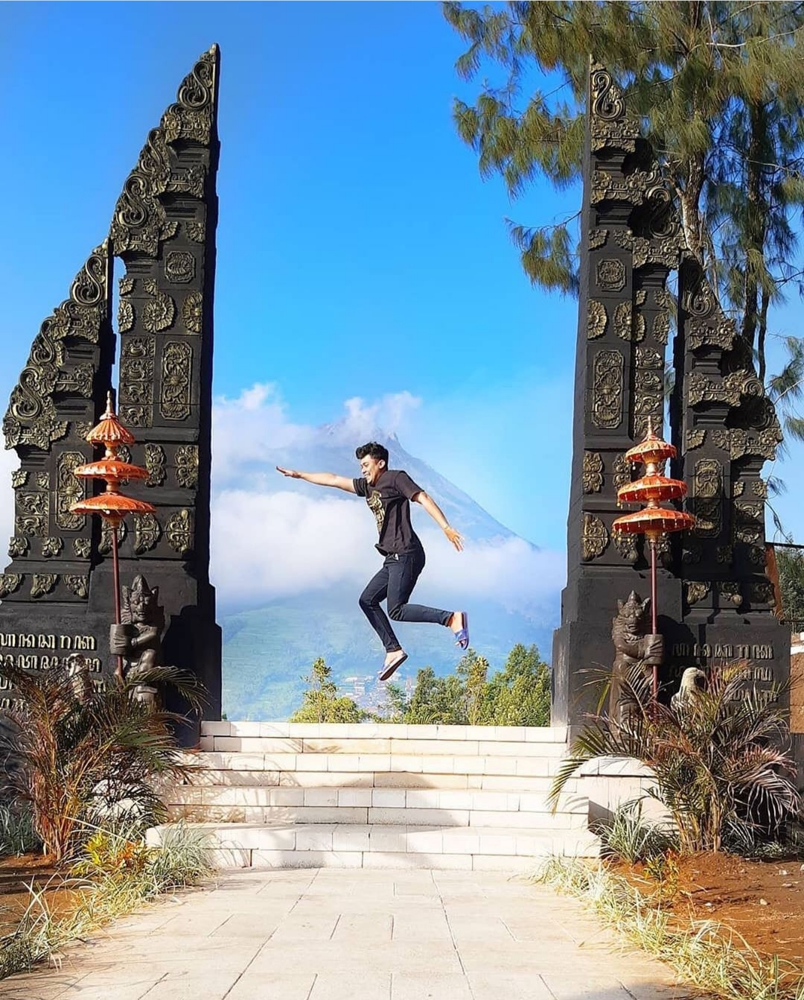

Embung ternyata tidak hanya bermanfaat untuk sektor pertanian saja. Beberapa embung juga dimanfaatkan untuk sektor wisata, salah satunya Embung Manajar yang ada di Kecamatan Selo, Kabupaten Boyolali, Jawa Tengah.Salah satu alasan mengapa Embung Manajar juga dimanfaatkan untuk sektor wisata adalah karena keindahan panorama yang ada di sana.Jika Embung Kledung di Kabupaten Temanggung memiliki latar belakang Gunung Sumbing yang memesona, Gunung Merapi menjadi latar belakang Embung Manajar.Adapun, Embung Manajar tepatnya berlokasi di Desa Samiran, Kecamatan Selo, Kabupaten Boyolali. Jarak tempuh dari Kota Boyolali adalah sekitar 20 kilometer (km) dengan waktu tempuh sekitar 45 menit.
Bukit Senjaya

Kabupaten Boyolali di Jawa Tengah memiliki satu tempat wisata yang memberi kesan bagi wisatawan seperti sedang berada di Bali. Tempat wisata yang dimaksud adalah Bukit Sanjaya di Dusun IV, Desa Samiran, Kecamatan Selo. Tempat wisata tersebut baru dibuka pada akhir Juli 2020.Kendati demikian, beberapa masyarakat berkunjung dan berfoto-foto di salah satu spot berfoto berbentuk gapura dan menyebarkannya di media sosialSelanjutnya ada beberapa patung unik yang tersebar di beberapa titik Bukit Sanjaya, jalur yang dipenuhi dengan deretan kayu berbentuk segitiga yang menuju ke sebuah pendopo, juga spot berbentuk hati dengan latar belakang Gunung Merapi
Danau Teratai Jatisari
Wisata danau teratai terletak di Desa Kedungdowo Kecamatan Andong Kabupaten Boyolali, bunga teratai yang hidup secara luar ini seperti eceng gondok, berdasarkan keterangan warga sekitar sudah ada sejak 20 tahun silam, Namun baru sekitar dua tahun ini viral dan banyak di kunjungi orang hingga menjadi wisata lokal.Munculnya danau ini akibat pembangunan waduk kedungkancil di daerah miri sragen, terjadi genangan hingga mirip danau. Tanah ini milik dinas pengairan Provinsi, bila datang ke sana hanya cukup membayar parkir saja karena belum sepenuhnya di kelola pemerintah desa setempat.